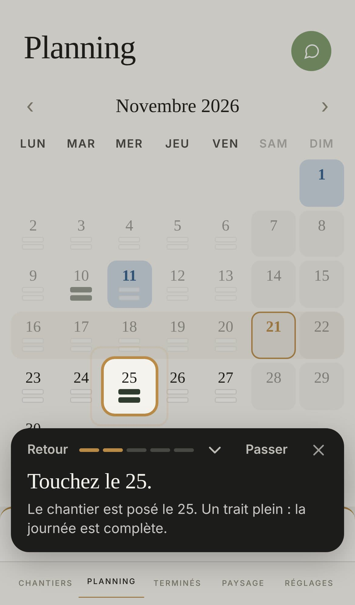
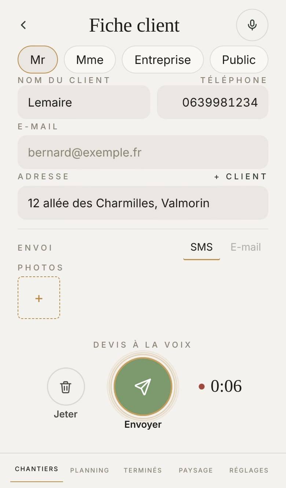
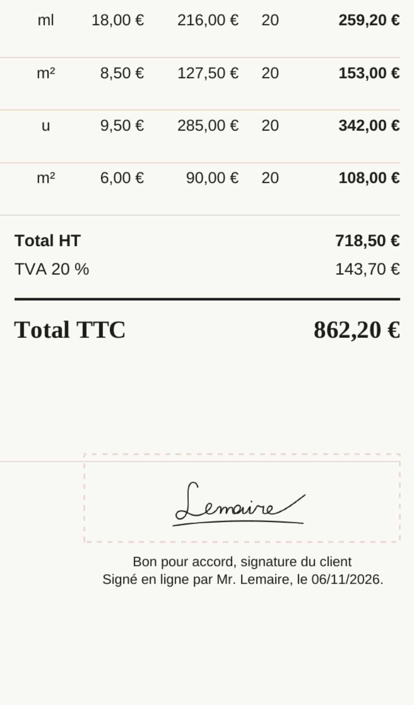
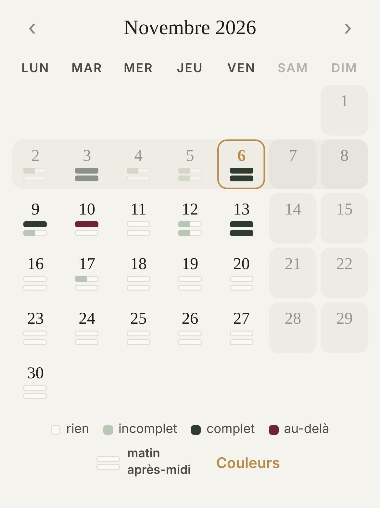
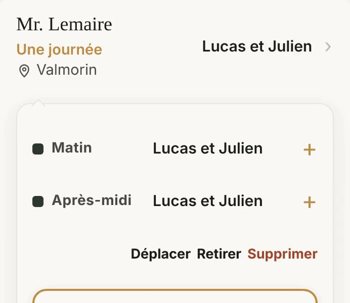
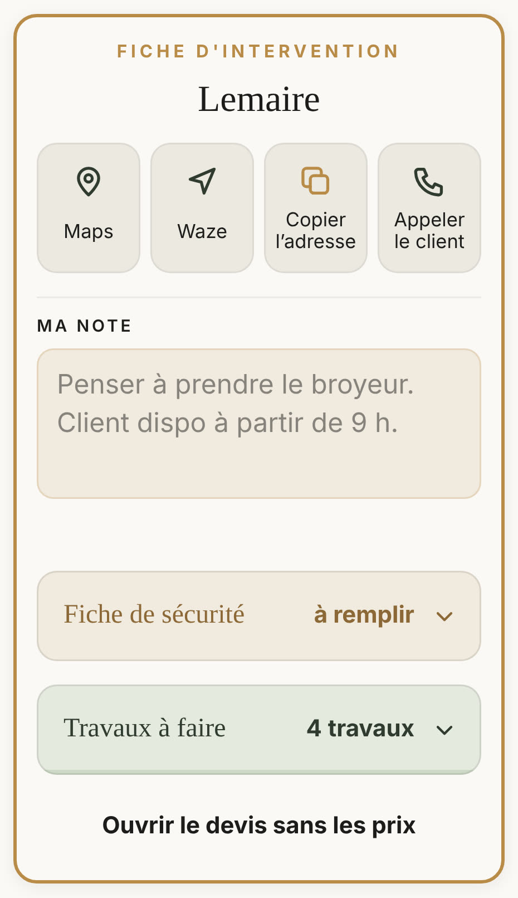
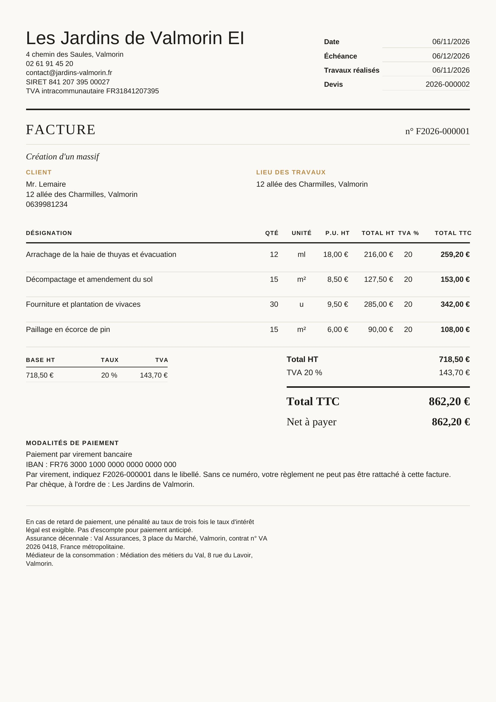
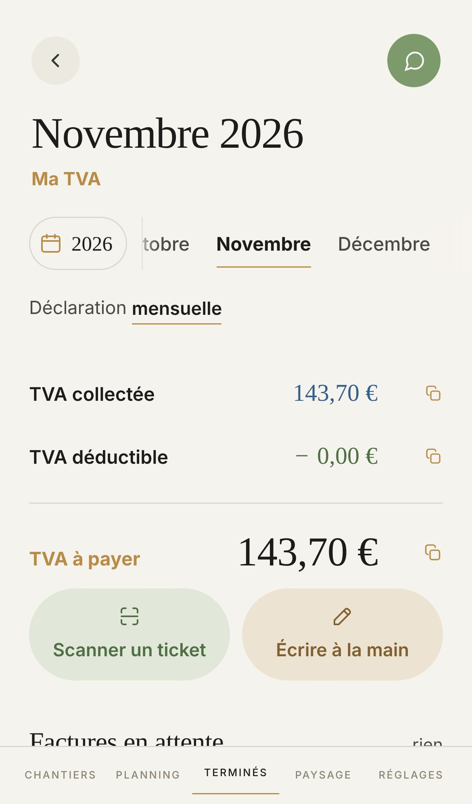

L'IA prépare. Vous décidez.
Rien ne part chez le client sans votre accord. Chaque ligne se corrige à la main, et quand une information manque, Cause la laisse vide et vous la demande plutôt que de l'inventer.
Vous dictez le chantier. Cause écrit le devis. Votre client accepte sur son téléphone.
0 € aujourd'hui. Tout est ouvert pendant l'essai.

La visite guidée de l'appli Les vrais écrans, guidés pas à pas. Dix minutes, sans compte. Commencer la visiteCause s'en occupe. Vous restez sur le chantier.
Vous décrivez le chantier sur place, à voix haute. Cause écrit le devis.

« On arrache l'ancienne haie de thuyas sur douze mètres. »
Sur le devis, cela devient :
Arrachage de la haie de thuyas et évacuation12 ml18,00 €216,00 € HT
Le devis, prêt à partir.
Le client choisit sa date et accepte depuis son téléphone.
Son accord est horodaté et conservé avec le devis.

Le mois d'un coup d'œil : plein, à moitié, trop chargé.


L'équipe se pose à la demi-journée.

Le jour J, tout tient sur la fiche.
La facture reprend le devis, ligne pour ligne.


Rien ne part chez le client sans votre accord. Chaque ligne se corrige à la main, et quand une information manque, Cause la laisse vide et vous la demande plutôt que de l'inventer.
Les mots du métier, l'équipe posée à la demi-journée, les retours d'intervention. Pas un logiciel de devis générique.
Le nom de l'entreprise, sa forme, votre régime de TVA. Une question à la fois. Votre logo s'ajoute ensuite.
Importez votre liste depuis Excel, ou remplissez-les au fil de vos premiers devis.
Ouvrez la fiche du client, appuyez sur le micro, et décrivez le chantier.
La visite guidée, sur les vrais écrans. Dix minutes, sans compte.
Sans engagement. Vous arrêtez quand vous voulez, à la fin de la période en cours.
Seules comptent les personnes qui font les devis et les factures. Vos salariés ne comptent jamais.
Du devis dicté à la facture, sans rien retaper.
39 € HT par mois
Jusqu'à cinq personnes qui facturent.
59 € HT par mois
Toute votre équipe sur Cause.
159 € HT par mois
+6 € HT par mois
Avec Artisan, Entreprise ou Illimité.
Un plan d'arrosage et un diagnostic offerts pour essayer.
Aujourd'hui0 €
L'essai ouvre tout. Votre formule démarre après les 15 jours, sauf si vous arrêtez avant.
Non. Les boutons sont grands, les mots sont ceux du métier. Cause est fait pour être utilisé debout, d'une main, en plein soleil.
Cause vous sert quand même : le devis, la date, le planning, la facture et la TVA valent pour tous les métiers, avec vos prix. Seul l'onglet Paysage est propre au jardin.
Sur votre téléphone et sur votre ordinateur, dans le navigateur. Il s'ajoute à l'écran d'accueil comme une application.
Vous le voyez avant le client. Rien n'est envoyé, validé ou facturé sans votre geste, et chaque ligne se corrige à la main.
Ouvrez Cause dans Chrome ou Edge et installez-le : il s'ouvre dans sa propre fenêtre, avec son icône sur le bureau, comme un logiciel. Même compte que sur le téléphone.
Téléchargez le devis en PDF : vous l'imprimez et vous le lui donnez, ou vous l'envoyez par e-mail.
Le papier porte vos numéros, la TVA et, pour un particulier, le formulaire de rétractation. S'il manque votre assurance décennale ou votre médiateur, Cause vous le rappelle.
Non. Ils reçoivent un lien par SMS ou par e-mail, choisissent leur date et acceptent depuis leur téléphone.
Chaque entreprise est isolée des autres au niveau de la base de données elle-même. Vos clients, vos prix et vos chantiers ne sont visibles que par votre équipe.
La formule que vous avez choisie démarre, et son premier prélèvement part ce jour-là. Vous arrêtez avant, depuis les Réglages : rien n'est prélevé, et vos devis et vos factures restent consultables.
Vous téléchargez toutes vos données quand vous voulez, vos devis et vos factures en PDF compris.
Elle arrive. Vous pourrez relier votre compte de facture électronique à Cause, et vos factures partiront par lui.
0 € pendant 15 jours. Sans engagement.
Une question avant d'essayer ? On vous répond.